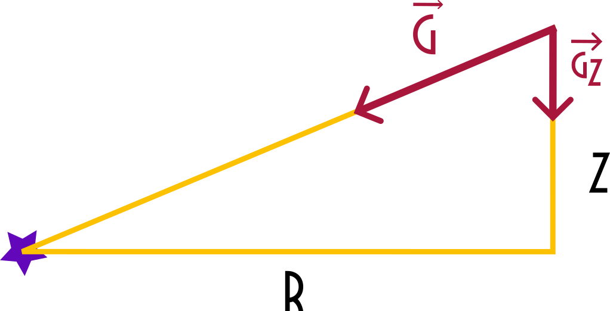
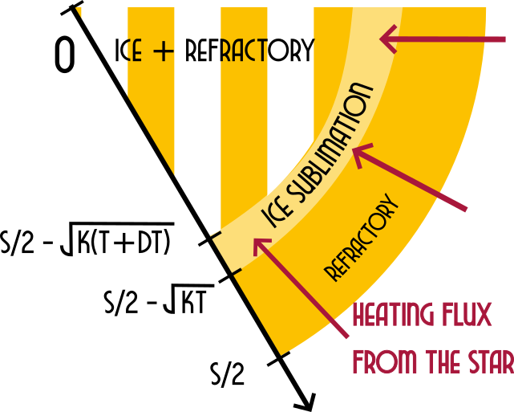
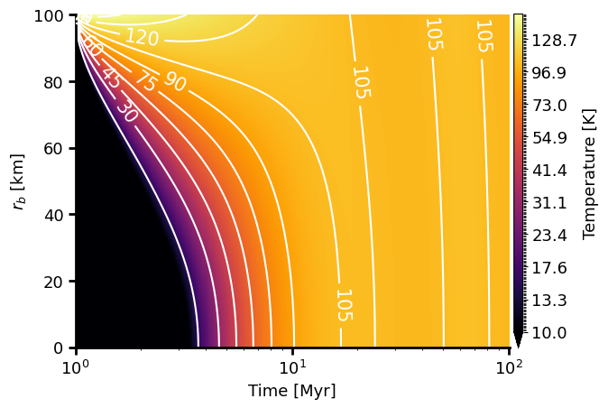
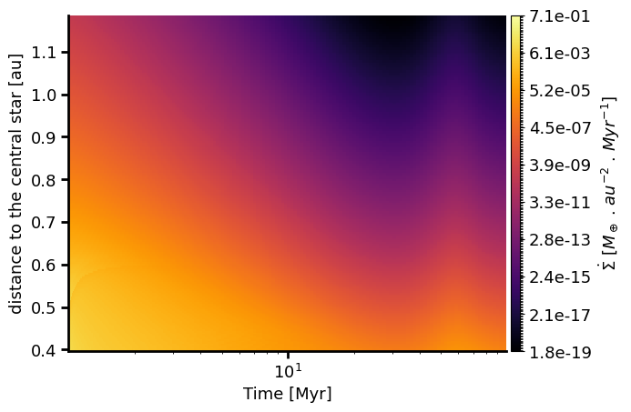
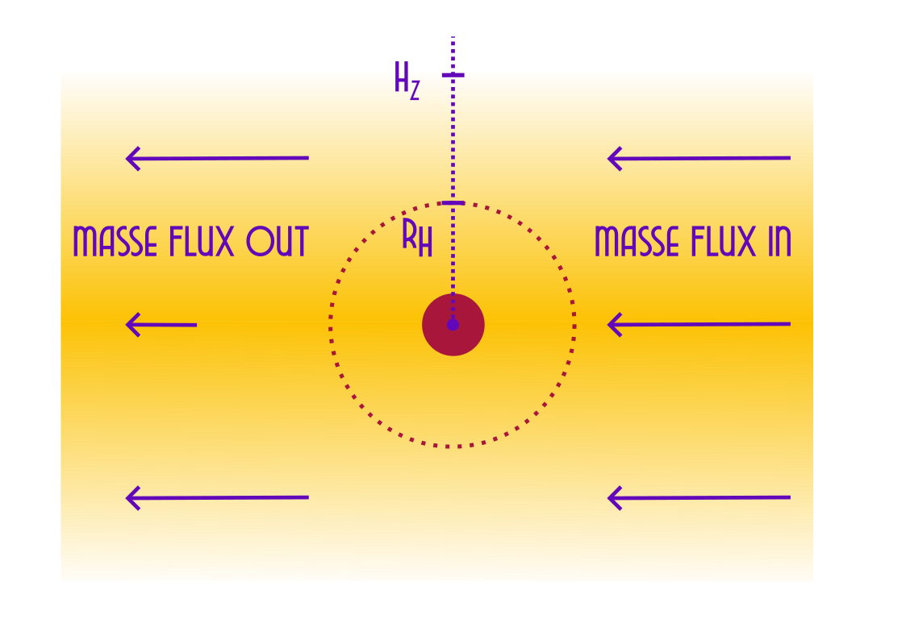

The Model
The Main Hypotheses
The objective of this numerical model is to track the evolution of gas within a debris disc throughout its entire lifetime, typically several tens of millions of years. To achieve this, reasonable assumptions are made to simplify the problem and save computational time and memory. We assume that the disc is axisymmetric and vertically isothermal in hydrostatic equilibrium, reducing the problem to a single dimension: the radial dimension. The disc’s shape, combined with these assumptions, means that the cylindrical coordinate system—centred on the central star—is an excellent choice for describing the problem.
The disc is assumed to be thin, with its vertical extension, \( H_z \), small compared to its radial extension. This assumption is typical for protoplanetary discs and is even more justified for debris discs, which are colder and thinner, as confirmed by observations. Therefore, the self-gravity of the disc can be neglected compared to other forces in our model.
At a distance \( \vec{r} \) from the central star of mass \( M_* \), in a frame rotating at angular speed \( \Omega \), the force budget on a gas particle with density \( \rho \) and pressure \( P \) is given by:
\( -\mathcal{G} \frac{\rho M_*}{r^3} \vec{r} - \vec{\nabla}(P) + \rho \Omega^2 \vec{r} = 0 \)
Equation 1: Force budget
Using our hypotheses and the cylindrical coordinate system, we derive the usual hydrostatic equation from the vertical projection of Equation 1:
\( \frac{\partial P}{\partial z} = - \rho g_z \)
Equation 2: Hydrostatic equilibrium
Here, \( g_z = \mathcal{G} \frac{M_*}{r^3} \vec{r} \cdot \vec{e_z} = \Omega_K \), the vertical projection of the central star’s gravitational field, is typical for discs (see Armitage, 2020, Lesur, 2021). \( \Omega_K = \sqrt{\mathcal{G} \frac{M_*}{r^3}} \) is the local Keplerian angular rotation speed.

Figure 1: Schematic representation of the gravitational acceleration \( \vec{g} \) and its vertical component \( g_z \) at a distance \( r \) from the central star (adapted from Armitage, 2020).The vertical structure of the disc in this model can be obtained analytically if an equation of state is provided. We assume the gas to be an ideal gas, such that:
\( \rho = \frac{\mu P}{k_B T} = \frac{P}{c_s^2} \) where \( \mu \) is the molecular mass.
For a protoplanetary disc, \( \mu \sim 2.3 \, m_p \), where \( m_p \) is the mass of a proton. The molecular mass is expected to be higher in a debris disc, which is mostly composed of water or carbon dioxide. \( c_s \) is the isothermal speed of sound.
The vertical pressure profile is then given by:
\( P = P_0 \exp\left(-\frac{1}{2} \left( \frac{z}{H_z} \right)^2 \right) \)
Here, \( H_z \) is the vertical scale height, equal to:
\( H_z = \frac{c_s}{\Omega} \)
Equation 3: Vertical scale height
For this model, we assume that the radial temperature profile follows a power law:
\( T(r) = 278 \left(\frac{L_*}{L_\odot}\right)^{1/4} \left(\frac{r}{\text{au}} \right)^{p_{\text{temp}}} \, \text{K} \)
Equation 4: The radial temperature profile
Here, \( \text{au} \) is one astronomical unit, and \( p_{\text{temp}} \) is the power slope referred to in the configuration dictionary as pls_temp.
The default value in the code is \(-0.5\). This value represents the black-body temperature and is typically used for simulating gas in debris discs (e.g., Moór et al., 2019, Marino et al., 2020, Kral et al., 2024, Huet et al., 2025).
The Dynamical Model
The Total Surface Density Evolution
Before introducing the sources and sinks of gas, let’s start with the simple local conservation equations for mass and momentum (see, e.g., Landau, 1971, Lesur, 2021 for the full analytical development):
\( \frac{\partial \rho}{\partial t} + \vec{\nabla} \cdot (\rho \vec{u}) = 0 \)
Equation 5: Mass conservation
\( \frac{\partial (\rho \vec{u})}{\partial t} + \vec{\nabla} \cdot \left(\rho \vec{u} \otimes \vec{u} \right) = \vec{\nabla}(P) + \vec{j} \wedge \vec{B} + \vec{\nabla} \cdot \vec{\vec{\tau}} \)
Equation 6: Momentum conservation
Here, \( \vec{u} \) and \( \vec{j} \) are the local velocity and current density vectors, respectively. \( \vec{\vec{\tau}} \) is the viscous stress tensor, \( \vec{\vec{\tau}} = \rho \nu \left(\vec{\nabla}\vec{u} + (\vec{\nabla}\vec{u})^T \right) \).
These two equations are too complex to be numerically integrated over the timescale of a debris disc’s lifetime. The long-term evolution of gas in an accretion disc is modelled using a turbulent viscosity \( \nu_{\text{turb}} \), introduced by Shakura & Sunyaev, 1973. This coefficient can also model magneto-hydrodynamical effects (see Kral & Latter, 2016, Cui et al., 2024 for debris discs).
Instead of integrating Equation 5, we integrate the conservation of angular momentum for an axisymmetric thin disc, including the viscous torque \( \Gamma_{\text{visc}} = 2 \pi r \Sigma \nu r \frac{\partial \Omega}{\partial r} \) (see Pringle, 1981):
\( \frac{\partial}{\partial t} \left( 2 \pi r \Sigma r^2 \Omega \right) + \frac{\partial}{\partial r} \left( 2 \pi r \Sigma r^2 \Omega v_r \right) = \frac{\partial \Gamma_{\text{visc}}}{\partial r} \)
Equation 7: Angular momentum conservation
Here, \( \Sigma \) is the surface density, and \( \vec{v}_r \) is the radial velocity, such that \( \vec{u} = \vec{v}_r + \vec{v}_{\text{turb}} \). All turbulence effects included in \( \vec{v}_{\text{turb}} \) are modelled into the total viscosity \( \nu = \nu_{\text{molecular}} + \nu_{\text{turb}} \).
We assume the local angular velocity \( \Omega \) to be the Keplerian angular velocity \( \Omega_K \), i.e., we neglect the pressure contribution to the angular rotation of the gas. Thus, we obtain:
\( \frac{\partial}{\partial t} \left( r^{3/2} \Sigma \right) + \frac{\partial}{\partial r} \left( r^{3/2} \Sigma v_r \right) = -\frac{3}{2} \frac{\partial}{\partial r} \left( \sqrt{r} \Sigma \nu \right) \)
Equation 8
If we integrate the mass conservation equation (Equation 5) along the vertical axis, we obtain:
\( \frac{\partial}{\partial t} (r \Sigma) + \frac{\partial}{\partial r} (r \Sigma v_r) = 0 \)
Equation 9: Vertically integrated mass conservation
We can simplify Equation 7 using Equation 8. By using both equations, we derive the standard diffusion equation for an accretion disc, as described in Lynden-Bell & Pringle, 1974:
\( \frac{\partial \Sigma}{\partial t} = \frac{3}{r} \frac{\partial}{\partial r} \left( \sqrt{r} \frac{\partial}{\partial r} \left( \nu \Sigma \sqrt{r} \right) \right) \)
Equation 10: Viscous diffusion
For debris discs, sources of gas are present at the belt level, where the gas is produced, and sinks are present at the planetary levels. All these effects are modelled in the source term \( \dot{\Sigma} \):
\( \frac{\partial \Sigma}{\partial t} = \frac{3}{r} \frac{\partial}{\partial r} \left( \sqrt{r} \frac{\partial}{\partial r} \left( \nu \Sigma \sqrt{r} \right) \right) + \dot{\Sigma} \)
Equation 11: Viscous diffusion with source term
In their model of the evolution of accretion discs, Shakura & Sunyaev, 1973 introduced the famous dimensionless viscous parameter \( \alpha \):
\( \alpha = \frac{\nu}{c_s H_z} \)
Equation 12a: The viscous parameter
This parameter is important not only because it is dimensionless but also because it can be assumed to be constant across the entire disc. Typical values for \( \alpha \) range between \( 10^{-3} \) and \( 10^{-1} \) for debris discs (Kral & Latter, 2016, Cui et al., 2024).
Introducing this parameter into Equation 11, along with the temperature profile, we obtain:
\( \frac{\partial \Sigma}{\partial t} = \frac{3 \nu_0}{r_0^{3/2 + p_{\text{temp}}}} \frac{1}{r} \frac{\partial}{\partial r} \left( \sqrt{r} \frac{\partial}{\partial r} \left( \Sigma r^{2 + p_{\text{temp}}} \right) \right) + \dot{\Sigma} \)
Equation 12b
Here, \( r_0 \) is an arbitrary radius, and \( \nu_0 = \frac{k_B T(r_0) \alpha r_0^{3/2}}{\mu \sqrt{\mathcal{G} M_*}} \) is the viscosity at \( r_0 \).
This equation can be radically simplified if we introduce a new spatial coordinate \( X \) and a variable \( f \), such that:
\( X = \sqrt{r}, \quad f = \Sigma r^{2 + p_{\text{temp}}} \)
Equation 13: The new coordinate-variable system
Before introducing them into Equation 12b, we derive the expression for the new spatial derivative:
\( \frac{\partial}{\partial X} = 2X \frac{\partial}{\partial r} \)
Equation 14: The new spatial derivative
Finally, we arrive at the typical, very simple, one-dimensional viscous diffusion equation:
\( \frac{\partial f}{\partial t} = D \frac{\partial^2 f}{\partial X^2} + \dot{f} \) where \( \dot{f} = X^{4 + 2 p_{\text{temp}}} \dot{\Sigma} \) and \( D = \frac{3 \nu_0}{4 r_0^{3/2 + p_{\text{temp}}}} X^{1 + 2 p_{\text{temp}}} \). Equation 15: The final model to be integrated
With the default value for the temperature radial power slope \( p_{\text{temp}} = -1/2 \), we obtain a constant diffusion coefficient.
The Physical Meaning of \( f \)
In the numerical model, we use \( f \) to simplify the equation for numerical integration, reducing the number of mathematical operations and improving numerical efficiency. Using a simpler equation, such as Equation 15, also improves the accuracy of the numerical integration. However, it is possible to attempt to obtain a physical interpretation of the new variable that replaces the surface density.
The radial mass flux \( \Phi(r) = 2 \pi r \Sigma v_r \) can be expressed as a function of the spatial derivative of the surface density \( \Sigma \):
\( \Phi(r) = 2 \pi r \Sigma v_r = -6 \pi \sqrt{r} \frac{\partial}{\partial r} \left[ \nu \Sigma \sqrt{r} \right] \)
Equation 16: The mass flux in the old coordinate system
Introducing the viscous parameter \( \alpha \), our new spatial coordinate \( X \), and the new variable \( f \), we obtain:
\( \Phi(X) = -4 \pi D \frac{\partial f}{\partial X} \)
Equation 17: The mass flux in the new coordinate system
For a radial temperature power slope of \(-1/2\), \( f \) is directly proportional to the integral of the mass flux \( \Phi(X) \). In this case, \( f \) can be used to quickly estimate how the mass flux evolves within the disc. A negative flux implies a positive slope for \( f \), while a positive flux implies a negative slope.
The Evolution of Multiple Chemical Species
Due to photodissociation, and to model both a Kuiper belt and an asteroid belt, our models contain multiple chemical species. We define a turbulent velocity, \( v_r^i \), for each species \( i \), such that their total velocity is the sum of the radial velocity obtained via the evolution of the total surface density and \( v_r^i \):
\( v_i = v_r + v_r^i \) This velocity can be related to the mass fraction of species \( i \):
\( \omega_i = \frac{\Sigma_i}{\Sigma} \) such that (Charnoz et al., 2019):
\( v_r^i = -\nu \frac{\partial \omega_i}{\partial r} \)
Equation 18: The interspecies radial velocity
Each species follows a diffusion equation similar to Equation 11:
\( \frac{\partial \Sigma_i}{\partial t} = \frac{1}{r} \frac{\partial}{\partial r} \left[ 3 \omega_i \sqrt{r} \frac{\partial}{\partial r} \left( \nu \Sigma \sqrt{r} \right) + r \nu \Sigma \frac{\partial \omega_i}{\partial r} \right] + \dot{\Sigma_i} \)
Equation 19: The multi-species equations of evolution in the old coordinate system
All these equations are coupled with the radial velocity \( v_r \). As with Equation 11, Equation 19 can be simplified if we introduce the viscous parameter \( \alpha \), the new coordinate system, and \( f \) into a much simpler advection-diffusion equation:
\( \frac{\partial \omega_i}{\partial t} = \frac{D}{3} \left[ \frac{\partial^2 \omega_i}{\partial X^2} + 4 \frac{\partial \omega_i}{\partial X} \frac{\partial \ln f}{\partial X} \right] + \dot{\omega_i} \) where \( \dot{\omega_i} = \frac{\dot{\Sigma_i} - \omega_i \dot{\Sigma}}{\Sigma} \). Equation 20: The final multi-species equation of evolution
The advective term in this equation can cause oscillations during numerical integration if there are discontinuities in the problem, such as at the borders of the belts or at the critical surface density at which a species begins to be shielded from ionising radiation. The spatial discretisation scheme must be adapted to address this issue. One proposed solution is the WENO discretisation scheme (Jiang & Shu, 1996). In our case, we know the sign of the advection velocity, which is \( v_r \). We therefore use a different discretisation scheme for the simple derivation of \( \omega_i \) as a function of the sign of the radial velocity.
The Boundary Conditions
The boundary conditions for Equations 15 and 20 are set to prevent a positive inner mass flux or a negative outer mass flux, which would imply material being brought from either the central star or the outer disc—both physically impossible scenarios.
As it is not possible to model the entire disc, in addition to these two strong constraints on the mass flux, we estimate the innermost and outermost values of \( f \) using power-law extrapolation. This extrapolation works well when the system is close to steady state but can become inaccurate when the gas is slow to reach the boundaries of the integration domain. Finally, we apply an additional constraint that ensures the mass flux is at most equal to the mass flux crossing the previous cell.
Gas Production Models
The model can use a variety of methods—ranging from simple to sophisticated—to estimate the gas production rate, \( \dot{\Sigma}_{\text{belt}} \), at each belt.
The model used for each belt is specified in the configuration dictionary by the sublimation_model parameter.
This choice also determines which chemical elements are modelled in the simulation.
The gas production rate can be completely deactivated for a given belt by setting the sublimation model to none in the configuration dictionary.
Each model has a typical lifetime, t0_diss, before dissipation, as well as a dissipation timescale.
Before t0_diss, the gas production rate, \( \dot{\Sigma}_{\text{belt}} \), will be as described in the following sections.
After t0_diss, this gas production rate will be multiplied by a factor \( \exp\left(\frac{t - t0_{\text{diss}}}{t1_{\text{diss}}}\right) \), where \( t1_{\text{diss}} \) is the dissipation timescale.
These parameters can be set for each belt (the asteroid belt and the Kuiper belt) in the configuration dictionary.
These parameters enable the modelling of Nice-model-like scenarios, in which a primary massive belt is disrupted in the early stages of stellar system evolution, following the evolution of the protoplanetary disc due to planetary dynamical evolution.
To avoid numerical instabilities when integrating the mass fraction evolution (Equation 20), it is possible to set an initial gas fraction determined by a gas production rate, mdot_st_init, for each belt.
The Constant Gas Production Rate
This is the simplest gas production rate model, which can still be useful for testing the code’s efficiency, as an analytical solution exists for the steady state in this case.
This model can be set using the constant_rate value for the sublimation_model.
The rate is then determined by the value of the const_mdot key in the configuration dictionary.
Assuming a radial distribution of this gas production, the gas surface density source term, \( \dot{\Sigma}_{\text{belt}} \), is determined as:
\( \dot{\Sigma}_{\text{belt}} = \dot{\Sigma}_0 \left(\frac{r}{a_0}\right)^{-3/2} \quad \text{if } r \text{ is inside the belt’s radial limits} \) where \( a_0 \) is the belt’s mean semi-major axis, and
\( \dot{\Sigma}_0 = \frac{\dot{m}}{4 \pi a_0^2 \left( \sqrt{1 + \frac{\delta_a}{a_0}} - \sqrt{1 - \frac{\delta_a}{a_0}} \right)} \)
Equation 21: The gas mass surface density production rate for a constant mass production rate \( \dot{m} \)
The Thermal Diffusion Model
This model neglects the sublimation timescale and the molecular diffusion of gas into the solid following sublimation. This model is more accurate for Kuiper-belt-like objects than for asteroid-belt-like objects, as the sublimation timescale is usually close to or higher than the thermal diffusion timescale in the latter.
This model assumes the same radial distribution for the belt as the constant-rate model. The total gas mass generation rate is then determined by the properties of the belt (see Huet et al., 2025, where this model is described and used, and Figure 2).
For a given body of size \( s \), at a given time \( t \), it is assumed that all the ice above the radius \( r = \sqrt{Kt} \), where \( K \) is the thermal diffusion coefficient (set in the configuration dictionary), has already sublimated. During the infinitesimal time \( dt \), the layer between \( \frac{s}{2} - \sqrt{Kt} \) and \( \frac{s}{2} - \sqrt{K(t + dt)} \) sublimates. The mass loss rate for this body of size \( s \) is then:
\( \frac{dM_{\text{gas}}}{dt} = 2 \pi \rho_{\text{refr}} f_{\text{ice}} K^{3/2} \sqrt{t} \quad \text{if } t < \frac{s^2}{4K} \)
\( \frac{dM_{\text{gas}}}{dt} = 0 \quad \text{if } t \geq \frac{s^2}{4K} \) where \( \rho_{\text{refr}} \) is the density of refractory materials, and \( f_{\text{ice}} \) is the ice-to-refractory mass fraction. Equation 22: The gas mass production rate for a given body of size \( s \) for the thermal diffusion model

Figure 2: Schematic representation of the thermal diffusion model for one body of size \( s \)To calculate the full mass production rate \( \dot{m}(t) \), we require the size distribution \( n(s) \) of the belt, which is defined by several power slopes in the configuration dictionary, as well as the total belt mass, Mbelt.
If \( s_{\text{min}} \) and \( s_{\text{max}} \) represent the minimum and maximum sizes of the bodies within the belt, then:
\( \dot{m}(t) = \int_{\max(s_{\text{min}}, \sqrt{Kt})}^{s_{\text{max}}} 2 \pi \rho_{\text{refr}} f K^{3/2} \sqrt{t} \, n(s) \, ds \)
Equation 23: The gas mass production rate for the thermal diffusion model
The Full Thermal Sublimation Model
The thermal diffusion model is straightforward and allows for fast computation of the sublimation rate but is incomplete. A more complete model is also implemented, which includes the sublimation timescale and a more accurate estimation of thermal diffusion inside bodies. The sublimation rate of the gas depends on the local temperature (see Kral et al., 2021):
\( \dot{\rho}(T) = S P_{\text{eq}} \sqrt{\frac{m_{H_2O}}{2 \pi k_B T}} \)
Equation 24: The gas density production rate at a temperature \( T \) given by the sublimation timescale
Here, \( S = 3(1 - \Psi) / r_p \) represents the total interstitial surface area for pores of radius \( r_p \) and porosity \( \Psi \). \( P_{\text{eq}} = P_0 \exp\left[\frac{\mu h_{\text{sub}}}{k_B} \left(\frac{1}{T_0} - \frac{1}{T}\right)\right] \) is the equilibrium pressure, derived from the Clausius-Clapeyron law. \( P_0 \) is the pressure at the reference temperature \( T_0 \), and \( h_{\text{sub}} \) is the sublimation enthalpy. For water, with \( T_0 = 373 \, \text{K} \), \( P_0 = 10^5 \, \text{N} \cdot \text{m}^{-2} \), and \( h_{\text{sub}} = 2.78 \times 10^6 \, \text{J} \cdot \text{kg}^{-1} \).
The parameters \( r_p \) and \( \Psi \) can be set in the configuration dictionary as rp and Phi.
To obtain the local temperature \( T \) at a depth \( d \) within a body of size \( s \), the thermal diffusion equation in spherical coordinates is integrated for bodies of different sizes by the thermal_diff function:
\( \frac{\partial T}{\partial t} = K \left( \frac{\partial^2 T}{\partial r_b^2} + \frac{2}{r_b} \frac{\partial T}{\partial r_b} \right) \)
Equation 25: The one-dimensional spherical thermal diffusion equation
Here, \( r_b \) is the radial coordinate inside the bodies. The inner boundary condition (at the centre of the bodies, i.e., \( r_b = 0 \)) is set such that the thermal flux is zero. The outer boundary condition (at \( r_b = \frac{s}{2} \)) is set to: \( T(t, a_0) = 278 \left((1 - A) \frac{L_*(t)}{L_\odot}\right)^{1/4} \left(\frac{a_0}{\text{au}}\right)^{-1/2} \) which is the equilibrium temperature of a grey body of albedo \( A \) (set in the configuration dictionary for each belt) at an arbitrary distance \( a_0 \) from the central star.
To obtain the temperature at any other distance \( r \) from the central star, one simply multiplies the entire result by \( \left(\frac{r}{a_0}\right)^{-1/2} \). This is equivalent to a change of variable \( T' = T \left(\frac{r}{a_0}\right)^{-1/2} \) in Equation 25. The initial temperature is set sufficiently low that such multiplication has a negligible effect on it (the initial temperature will be lower than the sublimation temperature, around 140–160 K).

Figure 3: Evolution of the temperature inside a 100 km body at 0.79 au from a 0.7 \( M_\odot \) starThis model is integrated for different sizes, logarithmically spaced into a grid of size ITs_p.
The gas production rate for each body at different distances from the central star is estimated using Equation 24.
Since there is a limited amount of ice available to sublimate, the gas generation rate is set to zero when this amount is reached.
Finally, the gas surface density production rate \( \dot{\Sigma} \) is calculated using the number distribution of bodies inside the belt.
This final table of \( \dot{\Sigma}(r, t) \) is then interpolated at any time needed to solve the dynamical equations (Equations 15 and 20).

Figure 4: Evolution of the surface density source term \( \dot{\Sigma} \) for a belt centred at 0.79 au from a 0.7 \( M_\odot \) starPlanetary Accretion
Planetary accretion of gas is modelled using \( 2 \times \text{dip} \) sink cells centred on the planet’s semi-major axis. The number of sink cells remains fixed throughout the simulation. Each planet removes a fraction of the incoming mass flux:
\( \dot{M}_{\text{accr}} = f_{\text{accr}} \min\left(1, \frac{R_H}{H_z}\right) \Phi_{\text{in}} \) where \( R_H \) is the planet’s Hill radius.
Equation 26: The accretion rate for a planet
The accretion efficiency is set for the entire simulation and parameterises the short-timescale, three-dimensional hydrodynamic process that can limit accretion. If the planet’s Hill radius is smaller than the disc scale height, only a fraction of the incoming mass flux should be considered when estimating the accretion rate \( \dot{M}_{\text{accr}} \) (see Figure 5). We do not expect the accretion efficiency to differ for different chemical species. This implies that, for each chemical species, we have:
\( \dot{\Sigma}_i = \omega_i \dot{\Sigma} \quad \text{which implies} \quad \dot{\omega_i} = 0 \)

Figure 5: Schematic representation of the mass flux crossing the planet’s orbitIn practice, estimating the correct value of the flux arriving at the planet’s interior is more difficult than it seems. Since there is an accretion width related to the number of sink cells, the gas needs time to diffuse inward from the outer boundary of the sink cell area to the planet. Using the flux at the outer boundary as the inner flux is not advisable, as this can lead to an overestimation of the accretion rate, resulting in negative surface densities at the planet’s level and divergence in the code. It is also not possible to use the mass flux at the level of the planet, as the flux has already been altered by accretion at this level.
In this model, we estimate the inner flux from the outer flux by assuming that the gas is in a steady state.
This approximation underestimates the accretion rate but does not lead to the numerical issues that arise with the mass flux at the outer limit.
Finally, we modulate the accretion rate for the sink cells using a Gaussian distribution with a standard deviation of dip, normalised to achieve the desired accretion rate.
Photodissociation
As the gas accretion by the planet does not need to be modelled in the multi-species evolution equation (Equation 20), since \( \omega_i^{\text{accr}} = 0 \), photodissociation conserves the total mass, and therefore \( \dot{\Sigma} = 0 \).
We model this photodissociation by estimating the photodissociation timescale, which depends on the incident UV flux and the shielding by other molecules and self-shielding. For water, we obtain:
\( \dot{\omega}_{H_2O}^{\text{photo}} = -\frac{\omega_{H_2O}}{t_{\text{ph}}^w} \)
\( \dot{\omega}_{H}^{\text{photo}} = \frac{2 \mu_H}{\mu_{H_2O}} \frac{\omega_{H_2O}}{t_{\text{ph}}^w} \)
\( \dot{\omega}_{O}^{\text{photo}} = \frac{\mu_O}{\mu_{H_2O}} \frac{\omega_{H_2O}}{t_{\text{ph}}^w} \)
Equation 27: The mass fraction photodissociation sink and source terms for water
For carbon monoxide, we obtain:
\( \dot{\omega}_{CO}^{\text{photo}} = -\frac{\omega_{CO}}{t_{\text{ph}}^{\text{co}}} \)
\( \dot{\omega}_{C}^{\text{photo}} = \frac{\mu_C}{\mu_{CO}} \frac{\omega_{CO}}{t_{\text{ph}}^{\text{co}}} \)
\( \dot{\omega}_{O}^{\text{photo}} = \frac{\mu_O}{\mu_{CO}} \frac{\omega_{CO}}{t_{\text{ph}}^{\text{co}}} \)
Equation 28: The mass fraction photodissociation sink and source terms for carbon monoxide
The Photodissociation Timescale for Water
We follow the same procedure as in Kral et al., 2024 to estimate this photodissociation timescale:
\( t_{\text{ph}}^w = t_{\text{ph}}^f(r, t) \exp\left(\frac{n_{H_2O} \mu_{H_2O}}{\Sigma_{\text{crit}}}\right) \) where \( t_{\text{ph}}^f \) is the lifetime of a molecule in the absence of shielding, and \( n_{H_2O} \) is the number density of water molecules in the line of sight between the molecule and the photodissociation source. \( \Sigma_{\text{crit}} = \frac{\mu_{H_2O}}{\sigma_{H_2O}} \) is the surface density at which the optical depth \( \tau_w = n_{H_2O} \sigma_w \) is equal to 1. \( \sigma_{H_2O} \) is the water vapour photodissociation cross-section in the UV, assumed to be a constant equal to \( 5 \times 10^{-22} \, \text{m}^2 \). Equation 29: Water photodissociation timescale
This model has two photodissociation sources: the central star and the interstellar medium. The two photodissociation timescales are calculated separately, and the resulting two values of \( \dot{\omega}_i \) are summed.
The Interstellar Medium Contribution
Interstellar radiation arrives from the top of the disc. We neglect projection effects due to the isotropy of interstellar radiation, meaning the result assumes the radiation arrives at the disc perpendicular to the midplane. Thus, \( n_{H_2O}^{\text{ISRF}} = \frac{\Sigma_{H_2O}}{\mu_{H_2O}} \).
We use the interstellar spectrum in ISRF.dat and the water photodissociation cross-section in H2O.txt to estimate the free photodissociation timescale \( t_{\text{ph}}^{f, w} \):
\( t_{\text{ph}}^{f, \text{ISRF}} = \frac{1}{\int I(\lambda)_{\text{ISRF}} \sigma_w d \lambda} \simeq 39 \, \text{yr} \)
Equation 30: The water free photodissociation timescale
The Central Star Contribution
Evaluating the water number density is slightly more complex in this case, but we can obtain a good approximation using:
\( n_{H_2O} = \int_{r_{\text{in}}}^r \frac{\Sigma(R)}{\mu_{H_2O} H_z(R)} \, dR \)
Equation 31: The water number density at a radius \( r \) in the line of sight between the star and the molecule
An estimation of the free photodissociation timescale at a radius \( r \) and time \( t \) can be obtained, as for the ISRF, using the water photodissociation cross-section and the star’s spectrum:
\( t_{\text{ph}}^{f, *} = \frac{1}{\int L_*(\lambda, r, t) \sigma_w(\lambda) \, d\lambda} \) where \( L_*(\lambda, r, t) = \frac{2 \pi r H_z(r)}{\pi r^2} L_*(\lambda, t) \) is the light flux from the central star at a radius \( r \) and time \( t \). Equation 32: First estimation of the photodissociation timescale for a free water molecule at a distance \( r \) from the central star
Unfortunately, our simulations of stellar luminosity evolution do not provide a full spectrum for each time and stellar mass. However, we have a raw estimation of the flux in the UV (between 91.2 and 200 nm), \( L_{\text{UV}}^*(t) \):
\( t_{\text{ph}}^{f, *} \simeq \frac{h c}{\sigma_w L_{\text{UV}}^*(r, t) \Delta \lambda_{\text{UV}}} \)
Equation 33: Estimation of the photodissociation timescale for a free water molecule at a distance \( r \) from the central star
The Photodissociation Timescale for Carbon Monoxide
Our model for photodissociation is similar to the model of Marino et al., 2020, also used by us in Huet et al., 2025.
For carbon monoxide, we neglect the effect of the central star on photodissociation, as the disc is usually much farther away than a secondary water gas disc, and the gas is much thicker in the radial direction, meaning it is rapidly shielded. In our model, we assume that the carbon ionisation fraction is small. This assumption is more accurate for a massive disc than for a smaller one. We model both self-shielding and shielding by neutral carbon.
The photodissociation timescale is then:
\( t_{\text{ph}}^{\text{co}} = t_{\text{ph}}^f \frac{\exp\left[ \frac{\Sigma_C}{\Sigma_{\text{crit}}} \right]}{\Theta(\Sigma_{\text{CO}})} \)
Equation 34: The photodissociation timescale for a CO molecule
where \( t_{\text{ph}}^f \) is the photodissociation timescale for a free molecule, \( \Sigma_{\text{crit}} \) is the critical surface density for neutral carbon, and \( \Theta \) is the self-shielding function.
As with water, the photodissociation timescale for a free molecule can be calculated using the interstellar spectrum and the CO photodissociation cross-section. In the model, we take \( t_{\text{ph}}^f = 120 \, \text{yr} \).
The critical surface density is defined in the same way as for water, as the surface density at which the optical depth is equal to one. We obtain \( \Sigma_{\text{crit}} = 10^{-7} \, M_\oplus \cdot \text{au}^{-2} \).
Finally, the shielding function \( \Theta \) is interpolated from the values calculated by Visser et al., 2009.
References
Armitage, P., 2020, Astrophysics of Planet Formation, Second Edition
Charnoz, S., Pignatale, F. C., Hyodo, R., et al., 2019, A&A, 627, A50
Cui, C., Marino, S., Kral, Q., & Latter, H., 2024, MNRAS, 530, 1766
Kral, Q., Pringle, J. E., Guilbert-Lepoutre, A., et al., 2021, A&A, 653, L11
Kral, Q., Huet, P., Bergez-Casalou, C., et al., 2024, A&A, 692, A70
Jiang, G. S., & Shu, C. W., 1996, J. Comput. Phys., 126, 202
Lesur, G. R. J., 2021, Magnetohydrodynamics of Protoplanetary Discs, Journal of Plasma Physics
Löhne, T., Krivov, A. V., & Rodmann, J., 2008, ApJ, 673, 1123
Marino, S., Flock, M., Henning, T., et al., 2020, MNRAS, 492, 4409
Moór, A., Kral, Q., Ábrahám, P., et al., 2019, ApJ, 884, 108
Visser, R., van Dishoeck, E. F., & Black, J. H., 2009, A&A, 503, 323